¡Vamos! Aquí tienes un resumen detallado y accionable del paper que subiste.
¿Qué estudia?
Simulan por dinámica molecular (MD) cómo se forma el daño primario por irradiación en aleaciones binarias Cu–Ni y cómo ese daño impacta en sus propiedades a tracción. Exploran un espacio 3D de variables: temperatura (300–700 K), energía del PKA (2–10 keV) y orientación cristalina ([100], [110], [111]), y comparan distintas fracciones atómicas de Ni (0, 5, 10, 20%). También evalúan el cambio en el esfuerzo de fluencia tras irradiar.
Cómo lo hacen (métodos y setup)
- Modelos y potenciales: superceldas FCC de tamaño 50a×50a×50a (≈500 000 átomos); Cu con potencial de Mishin y Cu–Ni con EAM modificado con corrección ZBL (Bonny/Tramontina) para colisiones de corto alcance.
- Rangos explorados: T = 300–700 K; E_PKA = 2–10 keV; orientaciones [100], [110], [111].
- Protocolo MD: relajación NPT y termostatización (Nose–Hoover), cascadas en NVE con PKA cercano al centro; cada evento 50–100 ps hasta estabilizar defectos. Defectos identificados por Wigner–Seitz en OVITO; se promedian 20 simulaciones independientes por condición.
- Ensayos mecánicos: tracción cuasiestática del mismo bloque (pre y post-irradiación); preparación por CG, control térmico a 300 K, deformación bajo NVE con tasa 0.005 ps⁻¹; análisis de dislocaciones (DXA) y CNA en OVITO.
Resultados principales
1) Temperatura
- En todas las composiciones, el número de pares de Frenkel crece rápido (pico), luego decae y se estabiliza. A mayor temperatura, en estado estable quedan menos pares por mayor movilidad y recombinación vacancia–intersticial; además, la distribución se vuelve más localizada/compacta.
2) Energía del PKA
- Al subir E_PKA (2→10 keV) aumentan fuertemente los defectos por cascadas más energéticas y más desplazamientos atómicos; en estado estable persiste un conteo mayor de defectos.
3) Orientación cristalina
- El comportamiento de defectos es anisotrópico: las orientaciones [100], [110], [111] muestran respuestas distintas (picos y remanentes), coherente con la diferente periodicidad y espaciamiento de planos deslizantes.
4) Efecto del contenido de Ni
- Agregar Ni reduce la formación de defectos retenidos (particularmente con Ni alto) y, en mecánica, eleva la resistencia: antes de irradiar, el límite de fluencia crece con %Ni; tras irradiar, los Cu–Ni pierden resistencia, pero cuanto más Ni, menor es la caída (mejor resistencia a irradiación).
5) Propiedades a tracción (números)
-
A 300 K, tracción post-irradiación (dirección [100]) muestra que el esfuerzo de fluencia disminuye con E_PKA y aumenta con %Ni. Tabla 2 (GPa):
-
Cu: 16.86 (0 keV) → 15.82 (10 keV)
- Cu-5 %Ni: 18.91 → 17.05
- Cu-10 %Ni: 19.27 → 17.82
- Cu-20 %Ni: 19.77 → 18.86
En conjunto, más Ni → más fuerte y más inmune a la degradación por irradiación.
Qué aportan (interpretación)
- Mapa integral del daño primario y performance mecánica en Cu–Ni bajo un rango amplio de T, E_PKA y orientación, con estadísticas (20 réplicas). El Ni actúa como estabilizador: favorece recombinación de defectos y amortigua la pérdida de fluencia tras irradiar. La temperatura acelera recombinación; la energía PKA eleva la producción de defectos; la anisotropía de la red FCC modula la cascada y la retención.
Cómo podrías usarlo (si estás simulando Cu–Ni)
- Si tu objetivo es minimizar vacancias/intersticiales retenidos, opera a T más alta (dentro de límites de servicio) y considera Ni ≥10–20 at.%.
- Para estudios mecánicos, reportá fluencia vs. E_PKA y vs. %Ni, como en la Tabla 2, y analiza defectos por Wigner–Seitz + DXA/CNA para enlazar microestructura con pérdida de resistencia.
Limitaciones (implícitas del setup)
- Escalas de tiempo (≤100 ps) y tasa de deformación altas típicas de MD; extrapolar con cuidado a experimentos.
- Tamaños finitos (≈0.5 M átomos) y potenciales EAM/ZBL (parametrización específica) pueden influir en cinética y morfología de defectos. Aun así, validan potencial y propiedades base (DFT/MD) y realizan promedios de 20 simulaciones para robustez.
Si querés, te hago un gráfico con los datos de la Tabla 2 (fluencia vs. E_PKA para cada %Ni) a partir del PDF, o te armo un checklist para reproducir su pipeline en LAMMPS → OVITO (W–S, DXA, CNA) con tus dumps.
Figuras del Paper (30)
Sin caption
Figura en pagina 1.
Sin caption
Figura en pagina 1.
Sin caption
Figura en pagina 1.
Sin caption
Figura en pagina 1.
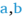
Sin caption
Figura en pagina 1.
Sin caption
Figura en pagina 1.
Sin caption
Figura en pagina 1.
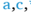
Sin caption
Figura en pagina 1.

Fig. 1. Detailed flow chart of the simulation framework used in this study.
Fig. 1. Detailed flow chart of the simulation framework used in this study.
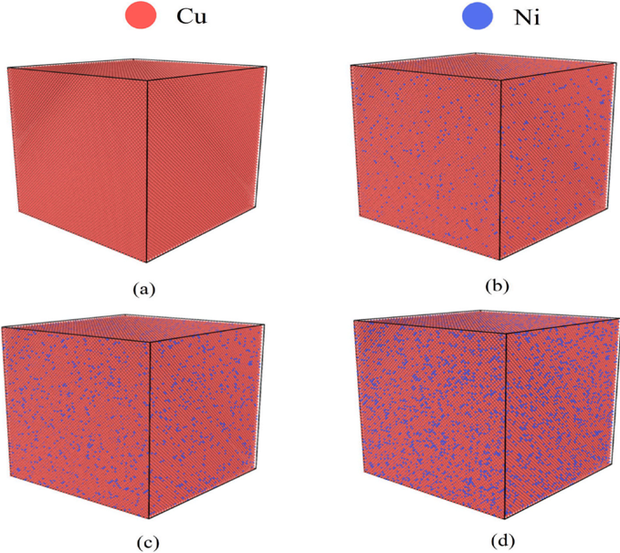
Sin caption
Figura en pagina 3.

Fig. 3. Variations in the temperature and potential energy of the simulation system during the relaxation period.
Fig. 3. Variations in the temperature and potential energy of the simulation system during the relaxation period.

Fig. 4. The change of the Frenkel defect logarithm of (a) Cu- 0 at%Ni, (b) Cu-5at%Ni, (c) Cu-10at%Ni and (d) Cu-20at%Ni in the direction [100] with time at different temperatures and at PKA energy of 4 keV.
Fig. 4. The change of the Frenkel defect logarithm of (a) Cu- 0 at%Ni, (b) Cu-5at%Ni, (c) Cu-10at%Ni and (d) Cu-20at%Ni in the direction [100] with time at different temperatures and at PKA energy of 4 keV.

Fig. 5. Number of Frenkel defect pairs in Cu -Ni alloys during the stable stage at different temperatures. (a) Defect count as a function of temperature for Cu alloys with varying Ni contents. (b) Defect count at different temperatures for Cu -Ni alloys with varying Ni contents.
Fig. 5. Number of Frenkel defect pairs in Cu -Ni alloys during the stable stage at different temperatures. (a) Defect count as a function of temperature for Cu alloys with varying Ni contents. (b) Defect count at different temperatures for Cu -Ni alloys with varying Ni contents.
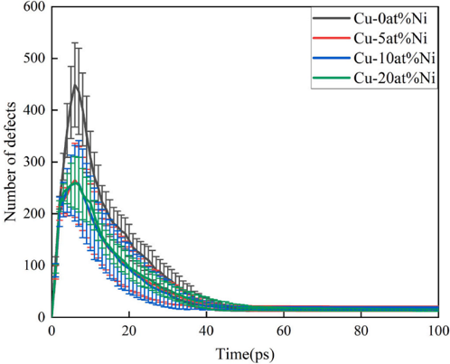
Fig. 6. The number of Frenkel defect pairs in Cu and Cu -Ni alloys changes over time with PKA energy of 4 keV along the [100] direction at 300 K.
Fig. 6. The number of Frenkel defect pairs in Cu and Cu -Ni alloys changes over time with PKA energy of 4 keV along the [100] direction at 300 K.
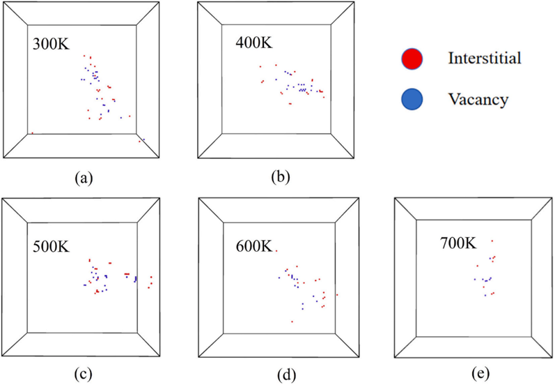
Fig. 7. The final distribution of Frenkel defect pairs(t = 100ps) in Cu-10at%Ni alloy at different temperatures with PKA energy of 4 keV and along the [100] direction, where red and blue circles represent interstitial atoms and vacancies, respectively.
Fig. 7. The final distribution of Frenkel defect pairs(t = 100ps) in Cu-10at%Ni alloy at different temperatures with PKA energy of 4 keV and along the [100] direction, where red and blue circles represent interstitial atoms and vacancies, respectively.
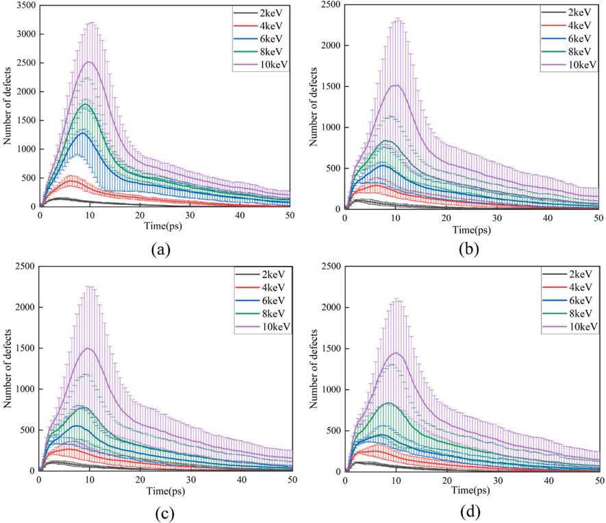
Fig. 8. The number of Frenkel defect pairs of (a) Cu-0at%Ni, (b) Cu-5at%Ni, (c) Cu-10at%Ni and (d) Cu-20at%Ni under different PKA energy irradiation changes with time at 300 K.
Fig. 8. The number of Frenkel defect pairs of (a) Cu-0at%Ni, (b) Cu-5at%Ni, (c) Cu-10at%Ni and (d) Cu-20at%Ni under different PKA energy irradiation changes with time at 300 K.
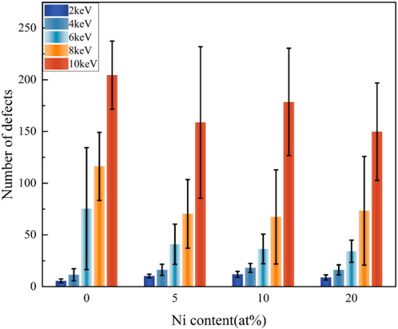
Fig. 9. The number of Frenkel defect pair(t = 50ps) as a function of Ni content with different PKA energies at 300 K.
Fig. 9. The number of Frenkel defect pair(t = 50ps) as a function of Ni content with different PKA energies at 300 K.
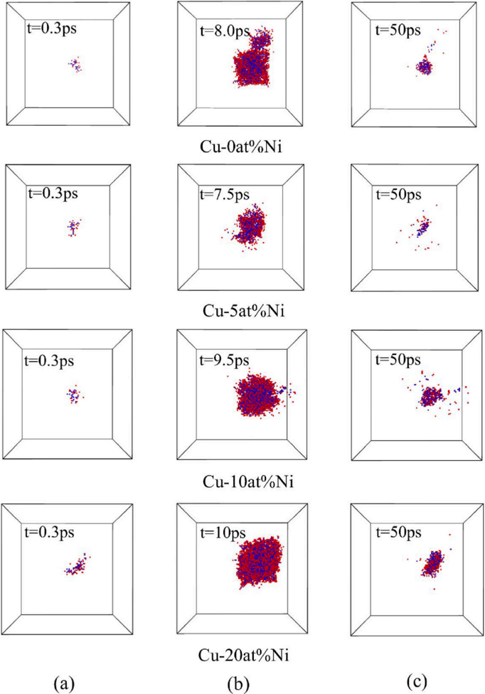
Fig. 10. The number of Frenkel defect pairs in Cu and Cu -Ni alloys at 300 K with a PKA energy of 10 keV along the [100] direction, (a) initial stage, (b) peak stage and (c) stable stage, where red and blue circles represent interstitial atoms and vacancies, respectively.
Fig. 10. The number of Frenkel defect pairs in Cu and Cu -Ni alloys at 300 K with a PKA energy of 10 keV along the [100] direction, (a) initial stage, (b) peak stage and (c) stable stage, where red and blue circles represent interstitial atoms and vacancies, respectively.
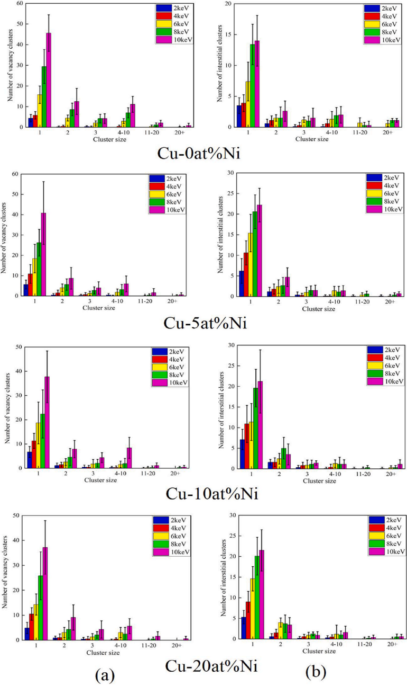
Fig. 11. (a) Vacant clusters and (b) interstitial clusters in Cu and Cu -Ni alloys during displacement damage process with different PKA energies along the [100] direction at 300 K.
Fig. 11. (a) Vacant clusters and (b) interstitial clusters in Cu and Cu -Ni alloys during displacement damage process with different PKA energies along the [100] direction at 300 K.
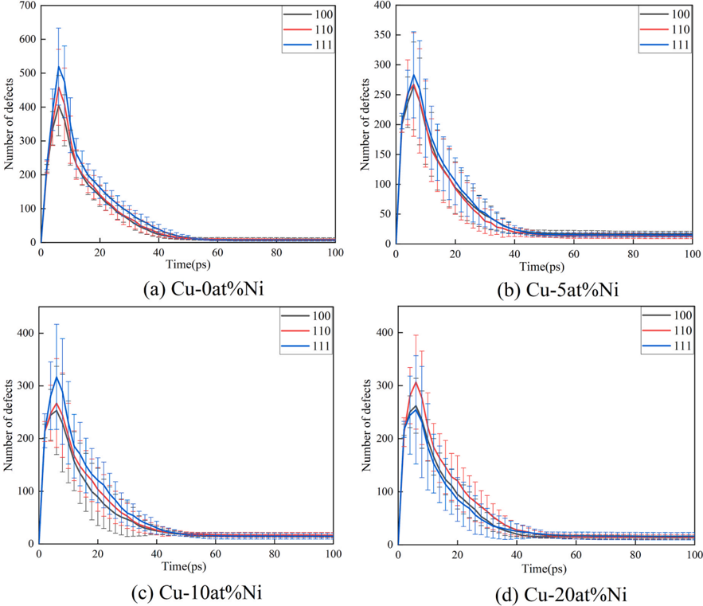
Fig. 12. The number of Frenkel defects in (a) Cu-0at%Ni, (b) Cu-5at%Ni, (c) Cu-10at%Ni and (d) Cu-20at%Ni varies with time when the PKA energy in different directions is 4 keV at 300 K.
Fig. 12. The number of Frenkel defects in (a) Cu-0at%Ni, (b) Cu-5at%Ni, (c) Cu-10at%Ni and (d) Cu-20at%Ni varies with time when the PKA energy in different directions is 4 keV at 300 K.
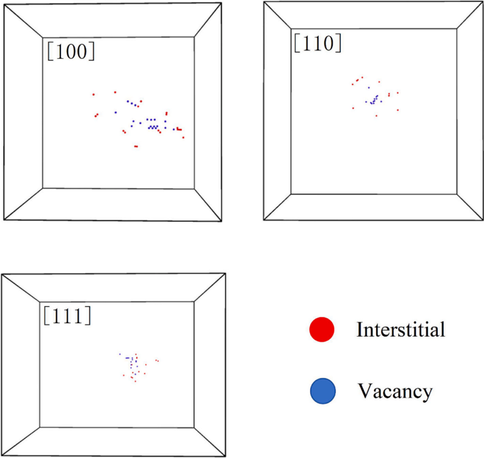
Fig. 13. The final distribution of the number of Frenkel defects(t = 100ps) in Cu-10at%Ni alloy with PKA energy of 4 keV at 300 K and along different directions, where red and blue circles represent interstitial atoms and vacancies, respectively.
Fig. 13. The final distribution of the number of Frenkel defects(t = 100ps) in Cu-10at%Ni alloy with PKA energy of 4 keV at 300 K and along different directions, where red and blue circles represent interstitial atoms and vacancies, respectively.
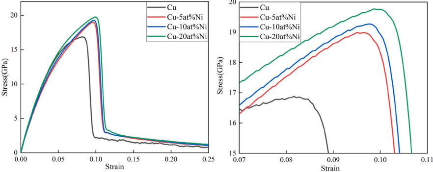
Fig. 14. (a) Stress-strain curves and (b) enlarged stress-strain curves around yield strength for Cu and Cu -Ni alloys at 300 K.
Fig. 14. (a) Stress-strain curves and (b) enlarged stress-strain curves around yield strength for Cu and Cu -Ni alloys at 300 K.
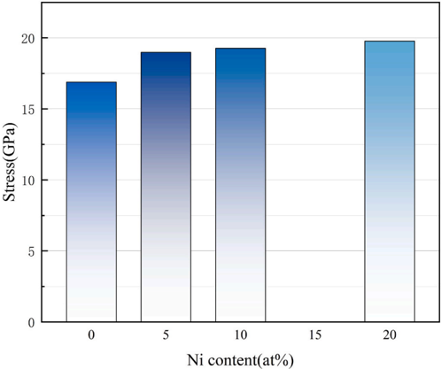
Fig. 15. The yield strength of Cu -Ni alloys changes with Ni content at 300 K.
Fig. 15. The yield strength of Cu -Ni alloys changes with Ni content at 300 K.
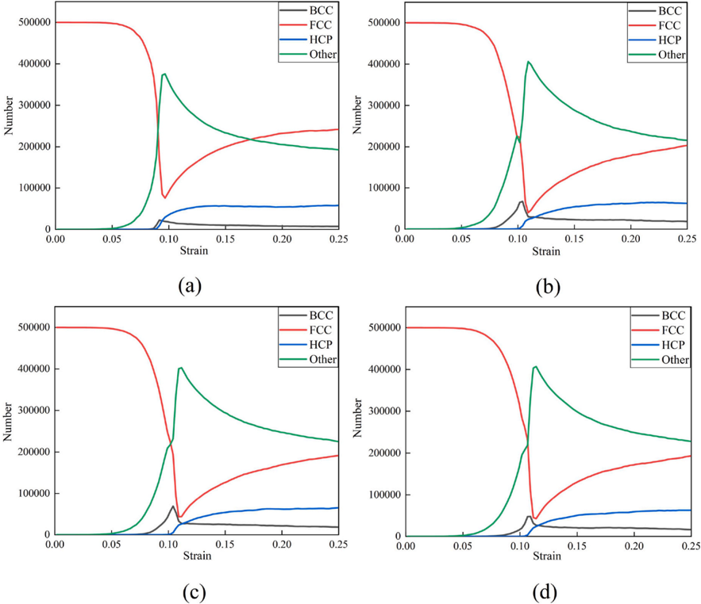
Fig. 16. Structural phase transitions observed in (a) Cu- 0 at%Ni, (b) Cu-5at%Ni, (c) Cu-10at%Ni and (d) Cu-20at%Ni during tensile deformation.
Fig. 16. Structural phase transitions observed in (a) Cu- 0 at%Ni, (b) Cu-5at%Ni, (c) Cu-10at%Ni and (d) Cu-20at%Ni during tensile deformation.
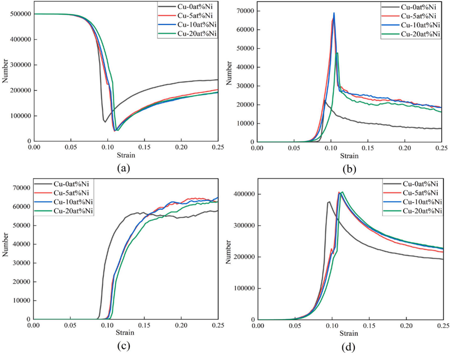
Fig. 17. Comparison of phase change structures of Cu and Cu -Ni alloys during the tensile process, where (a) FCC, (b) BCC, (c) HCP and (d) Other.
Fig. 17. Comparison of phase change structures of Cu and Cu -Ni alloys during the tensile process, where (a) FCC, (b) BCC, (c) HCP and (d) Other.
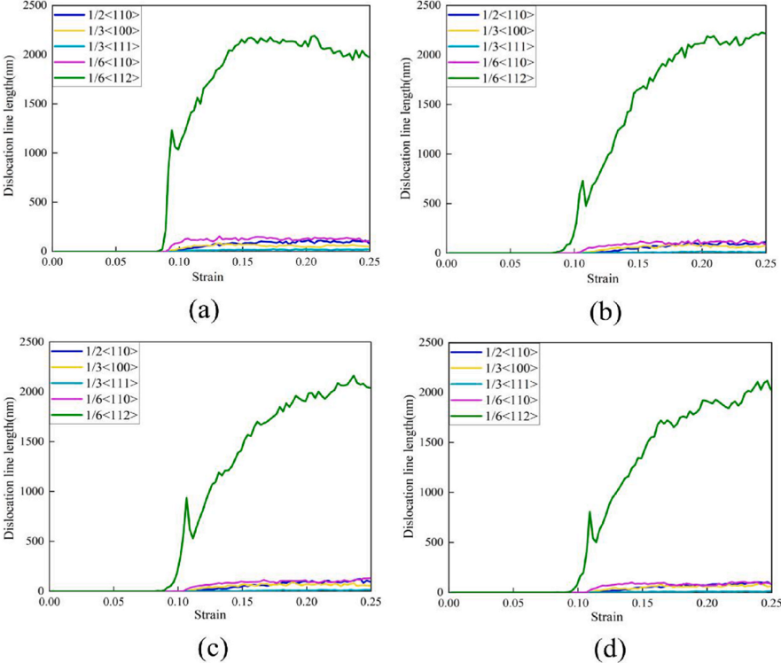
Fig. 18. The length of the dislocation line generated by (a) Cu-0at%Ni, (b) Cu-5at%Ni, (c) Cu-10at%Ni and (d) Cu-20at%Ni varies with strain during tensile process.
Fig. 18. The length of the dislocation line generated by (a) Cu-0at%Ni, (b) Cu-5at%Ni, (c) Cu-10at%Ni and (d) Cu-20at%Ni varies with strain during tensile process.
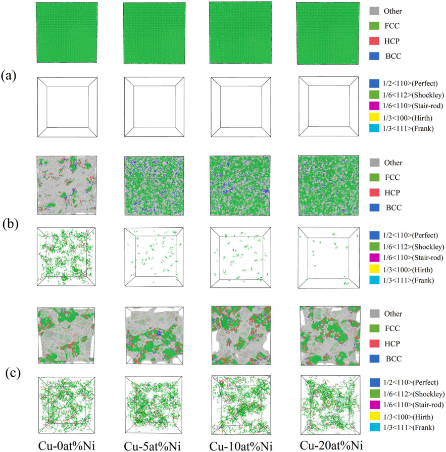
Fig. 19. The Microstructural diagrams of phase structure and dislocations produced in Cu and Cu -Ni alloys during tensile stretching, where (a) strain = 0.02 (b) strain = 0.09 (c) strain = 0.25.
Fig. 19. The Microstructural diagrams of phase structure and dislocations produced in Cu and Cu -Ni alloys during tensile stretching, where (a) strain = 0.02 (b) strain = 0.09 (c) strain = 0.25.
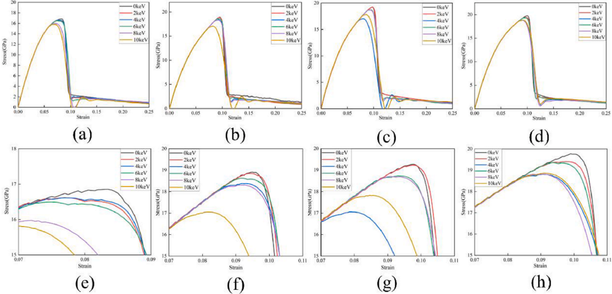
Fig. 20. Stress-strain curves of (a) Cu-0at%Ni, (b) Cu-5at%Ni, (c) Cu-10at%Ni and (d) Cu-20at%Ni after irradiation with different PKA energies in the direction [100] at 300 K, (e),(f),(g) and (h) are amplified corresponding graphs near the yield strength in (a), (b), (c) and (d), respectively.
Fig. 20. Stress-strain curves of (a) Cu-0at%Ni, (b) Cu-5at%Ni, (c) Cu-10at%Ni and (d) Cu-20at%Ni after irradiation with different PKA energies in the direction [100] at 300 K, (e),(f),(g) and (h) are amplified corresponding graphs near the yield strength in (a), (b), (c) and (d), respectively.
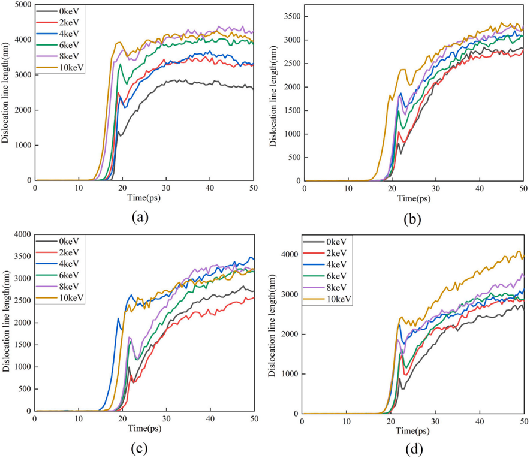
Fig. 21. The lengths of dislocation lines during the stretching of (a) Cu-0at%Ni, (b) Cu-5at%Ni, (c) Cu-10at%Ni and (d) Cu-20at%Ni under different PKA energy irradiations as a function of time.
Fig. 21. The lengths of dislocation lines during the stretching of (a) Cu-0at%Ni, (b) Cu-5at%Ni, (c) Cu-10at%Ni and (d) Cu-20at%Ni under different PKA energy irradiations as a function of time.
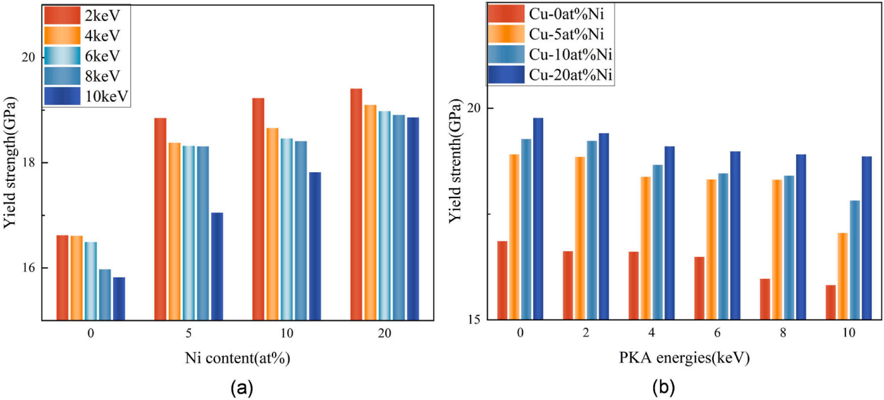
Fig. 22. Yield strength (GPa) of Cu and Cu -Ni alloys after 300 K irradiation with different PKA energies along the [100] direction. (a) Stress vs. Ni content for varying irradiation energies. (b) Stress vs. PKA energy for Cu alloys with different Ni contents.
Fig. 22. Yield strength (GPa) of Cu and Cu -Ni alloys after 300 K irradiation with different PKA energies along the [100] direction. (a) Stress vs. Ni content for varying irradiation energies. (b) Stress vs. PKA energy for Cu alloys with different Ni contents.